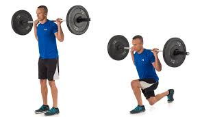
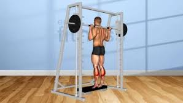

10 Ejercicios Claves para Ganar Masa Muscular
Estos ejercicios forman la base de un entrenamiento eficaz para ganar masa muscular. Si los incorporas con una dieta adecuada y descanso suficiente, verás grandes avances. ¡A darle con todo!s
1. Sentadillas (Squats) 🏋️♂️

2. Peso Muerto (Deadlift) 💪

3. Press de Banca (Bench Press) 🏆

4. Dominadas (Pull-ups) 🏋️

5. Press Militar (Overhead Press) 🔥

6. Remo con Barra (Barbell Row) 🏋️♀️

7. Fondos en Paralelas (Dips) 🤸

8. Curl de Bíceps con Barra (Barbell Bicep Curl) 💥

9. Zancadas con Peso (Lunges) 🦵

10. Elevaciones de Pantorrilla (Calf Raises) 🚶♂️
